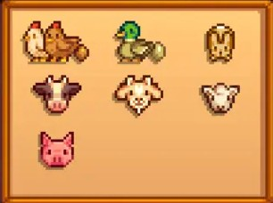

Animais
Gato e cachorro
Começando pelos animais de estimação, quando você começa no jogo, a marnie aparece na sua casa te oferecendo um animal, de acordo com suas preferências escolhidas na criação do personagem. No decorrer do jogo, voçê pode adotar outros indo no rancho na marnie.
Você pode escolher entre cachorro e gato, como seu primeiro animal, mas durante o jogo pode-se ter além dessas opções, como tartaruga e cavalo. O cavalo é necessário construir um estabolo encontrado na capintaria da Robin.
Quando você adota seu animal, você pode escolher o nome e todos os dias quando clicar nele irá aumentar sua amizade, até que um dia irá aparecer a mensagem que o seu pet ama você!
Cavalo
Com os cavalos, você pode andar por toda a vizinhança com ele, porém não pode entrar nos estalecimentos e nem na sua própria casa com ele. Mesmo que você o perca de vista, ele sempre volta pro estabolo no dia seguinte. Cultivando cenouras, você pode agradá-lo e assim aumentar sua amizade com ele, mas não é obrigatório alimentá-lo.
Animais do galinheiro
Para conseguir o galinheiro, é necessário comprá-lo na carpintaria da Robin. Depois de já tê-lo em sua fazenda, você pode comprar os animais no rancho da Marnie. Os animais que vivem no galinheiro são: galinhas, patos, galinha nulá, dinossauro, galinha dourada e coelho. Quanto maior o galinheiro, mais possibilidades de animais irá ter.
Todos os animais do galinheiro botam ovos, com exceção do coelho, que bota pés de coelho. A qualidade do produto depende da sua amizade com o animal, quanto maior, mais qualidade terá.
Animais do celeiro
No celeiro funciona da mesma forma que o galinheiro, mas os animais que vivem são: vacas e cabras produzem leite, ovelha produz lã, o porco produz trufa e o avestruz ovos.
